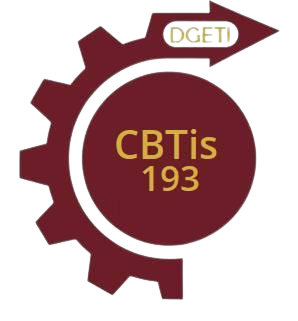

Garantizar a toda la población una educación democrática, laica, obligatoria, gratuita, integral, de calidad, con equidad, pertinencia y calidez humana, en los distintos tipos, niveles y modalidades, con transparencia y probidad.
Formar una comunidad estudiantil en continuo crecimiento de libertad responsable y capacidades cognitivas, que permitan el desarrollo de sus potencialidades, valores, habilidades, aptitudes y cualidades físicas, para acceder al nivel profesional y a su entorno social..
| Horario | Lunes | Martes | Miercoles | Jueves | Viernes |
|---|---|---|---|---|---|
| 7:00-7:50am | SubModulo1 | SubModulo3 | SubModulo2 | Calculo Integral | SubModulo3 |
| 7:50-8:40am | SubModulo1 | SubModulo3 | SubModulo2 | Calculo Integral | SubModulo3 |
| 8:40-9:10am | RECESO | RECESO | RECESO | RECESO | RECESO |
| 9:10-10:00am | SubModulo3 | SubModulo2 | Ingles | SubModulo2 | SubModulo3 |
| 10:00-10:50am | SubModulo3 | SubModulo2 | SubModulo3 | SubModulo2 | Calculo Integral |
| 10:00-10:50am | SubModulo3 | SubModulo2 | SubModulo3 | SubModulo2 | Calculo Integral |
| 10:50-11:40am | Ecologia | Tutoria | Calculo Integral | SubModulo1 | SubModulo1 |
| 11:40-12:30pm | Ecologia | Fisica 1 | FISICA 1 | SubModulo1 | Ingles 4 |
| 12:30pm-13:20 | Tutoria | Fusica 1 | Fisica 1 | Ingles 4 |